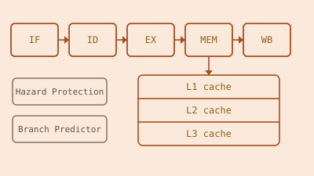

RISC-V CPU
A pipelined RISC-V RV32I processor built up from a single-cycle design to a fully pipelined implementation with hazard handling, a multi-level cache hierarchy, multiply and divide units, and branch prediction. Built by a four-person team.
My contributions were the fetch stage and PC control logic, the memory subsystem, and the three-level cache hierarchy and MMU, along with the cache verification testbenches.

Overview
This project builds a RISC-V RV32I processor from the ground up, in stages: starting from a basic single-cycle core with a minimal instruction set, then moving to a pipelined design with hazard management (stalling, flushing, forwarding), a multi-level cache hierarchy, the full RV32I instruction set, dedicated multiply and divide units outside the ALU, and finally a branch prediction module. Progress at each stage was verified on real hardware, running on a Vbuddy simulation interface.
Technical Approach: My Contributions
Fetch stage
I built the PC control logic, storing the current program counter and deciding the next one each cycle, and the top-level file wiring together all the logic inside the fetch stage. I also assembled the single-cycle CPU itself, bringing the fetch, decode, execute, memory, and writeback sub-modules together into one CPU top-level file before the design moved on to pipelining.
Memory subsystem
I designed the byte-addressable RAM with register protection, so writes are silently
dropped when the decoded destination index is register zero, mirroring the RISC-V
convention that x0 is hardwired to zero and can never actually be written.
Instruction memory is little-endian and byte-addressed, matching the RV32I encoding the
rest of the pipeline expects.
Cache hierarchy and MMU
My largest piece of the design was the three-level cache system. L1 is two-way
set-associative with a write-through policy, chosen specifically to keep control logic
simple rather than chase the extra hit rate of a write-back scheme. Behind the cache
hierarchy, the memory management unit fetches from main memory through a small two-state
FSM, IDLE and FILL, which bursts four words from RAM per miss
rather than fetching one word at a time.
Verification
I wrote the cache testbenches using the GTest framework, checking cycle counts for hits and misses, hit-miss ratios, and that the data returned was actually correct, not just that the cache eventually responded. Catching timing bugs here mattered more than usual since the cache sits directly in the pipeline's critical path.

Results
The processor runs the full staged feature set end to end: pipelined execution with hazard handling, the three-level cache hierarchy, complete RV32I support, hardware multiply/divide, and branch prediction, demonstrated on real hardware through the F1 lights simulation shown above.